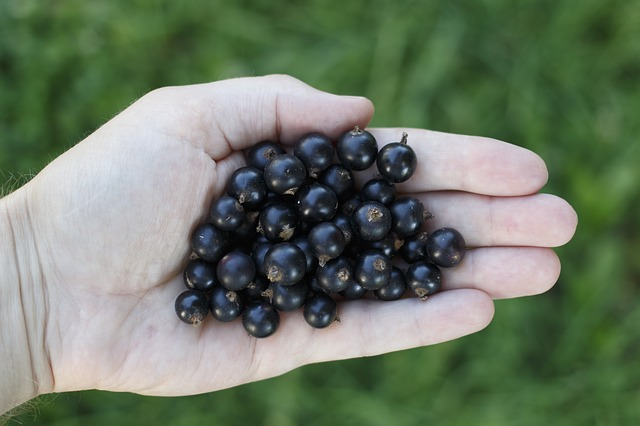

Comment soigner les bobos de l'été avec les légumes, fruits, aromates et herbes du potager
Une piqure d’insecte ? Une digestion difficile ? Un «bleu» ? Bref un petit bobo de l’été. Et vous ne voulez pas ou vous ne pouvez pas utiliser les médicaments traditionnels. Alors vite, au potager. Les fruits, légumes, aromates et herbes regorgent de solutions pour vous soigner.
APAISER UNE PIQURE D’INSECTE :
BARDANE : frottez la zone avec une feuille fraîche légèrement broyée
PLANTAIN MAJEUR : frotter avec une feuille fraîche. NB : vous pouvez également broyer les feuilles de plantain (certains les mâchent pour ce faire), et appliquer ce cataplasme pour apaiser une brulure, une piqure, une coupure... ou même une petite ampoule (à garder en place avec un pansement)
POIREAU : frottez avec le bulbe coupé en deux
FACILITER LA DIGESTION ET LIMITER LES GAZ INTESTINAUX :
AIL : infusez 5 à 10g d’ail écrasé ; boire 1 tasse après le repas
FENOUIL : faites infuser 10 pincées de graines par litre d’eau ; boire 1 tasse avant chaque repas. NB : vous pouvez ajouter 5 pincées de graines d’anis et des feuilles de menthe
SARRIETTE : En infusion (50 g)
CONTRE LES « BLEUS » :
CERFEUIL : appliquez des fleurs fraîches pilées
PERVENCHE : faire un cataplasme de feuilles fraîches broyées
MILLEPERTUIS : utiliser ce baume (faire macérer au soleil pendant 5 semaines 500g de fleurs fraîches hachées dans 1 litre d’huile d’olive. Filtrez lorsque l’huile prend une belle couleur rouge. Attention : cette plante peut provoquer une sensibilisation de la peau au soleil)
POUR LES YEUX :
EN CAS D’IRRITATION / DE CONJONCTIVITE (inflammation de l’œil blanc) NB : ces recettes s’utilisent fraîches donc n’en préparez pas trop d’avance)
BLEUET DES MOISSONS (Egalement appelé “casse lunette”) : infusion de 40 g de fleurs séchées ; imprégner une compresse et garder la 15 minute sur l’œil (fermé !)
Violette odorante : Lavez les paupières enflammées avec une infusion refroidie de 30 g de feuilles
EN CAS DE FATIGUE
FENOUIL : faites infuser 10 g de graines dans un bol d’eau chaude ; utilisez cette lotion refroidie via une compresse posée 15 minutes
POMME DE TERRE : râpée en cataplasme
CALMER LES MAUX DE GORGE :
CASSIS : infusez 45 g de feuilles fraîches ou séchées (dans ce cas les tremper au minimum 1h avant dans l’eau froide) ; à utiliser en gargarisme
ROSIER DE PROVINS : utiliser le miel rosat (faire cuire 20 g de pétales de roses pris sur les boutons et débarrassés de l’onglet, pendant 10 minutes dans 100 g de miel) ; passer à travers un linge
SAUGE : Décoction légère : 15 g de feuilles ; à chaud
SARRIETTE : en décoction (100 g)d

EN CAS DE RHUME / « ENCRASSEMENT » RESPIRATOIRE :
VIOLETTE ODORANTE : Les fleurs soignent les maladies respiratoires. En macération : 3 poignées de fleurs fraîches avec 1 litre d’eau et 1 kilo de sucre, pendant 6 heures ; faire réduire le liquide pendant 1 heure au bain marie ; filtrer le sirop et boire
MARJOLAINE (ORIGAN) ET THYM : réduits en poudre, se prisent pour dégager un nez bouché
CALMER UNE TOUX REBELLE :
THYM : faites une décoction de 250 g de plantes ; ajouter 250 g de miel
LAITUE : faire un cataplasme de feuilles cuites sur la poitrine
Et puis il y a les stars du jardin, qui savent presque tout faire !
MÉLISSE (CITRONNELLE) :
Cette plante est calmante, antispasmodique, digestive et calmante.
En usage interne contre les digestions difficiles, les vertiges, les bourdonnements d’oreilles, les palpitations et les coliques nerveuses, l’insomnie, les maux de tête : infusez pendant 10 minutes 25 g de feuilles ; à boire tout au long de la journée.
En usage externe pour soulager les piqûres d’insectes et les “bleus” : faire un cataplasme de feuilles écrasées pour en extraire le suc. MENTHE :
Menthe poivré, chocolat, marocaine…. je vous conseille de réaliser les recettes ci dessous en variant les types de plantes (et donc de goûts!). Mais attention : à éviter si vous prenez de l’homéopathie, et à éviter en cas de maladie du foie :
pour l’estomac, l’intestin, les troubles digestifs : infusion de 4 à 5 feuilles (le soir limitez à 2 feuilles à cause de l’effet stimulant) dans une grande tasse d’eau bouillante ; cela vous aidera en cas de vomissement, coliques, ballonnements, gaz, douleurs hépatiques…
contre les spasmes (système digestif, respiratoire, utérus) : infusion de 20 g de feuilles ; boire 3 tasses dans la journée
en cas d’asthme, de bronchites, toux… : inhalez 45 g de feuilles plongées dans 1 litre d’eau bouillante
contre les migraines, douleurs articulaires, rhumatismes… : en compresses avec des feuilles fraîches
ROMARIN :
Ayez le réflexe de faire sécher des branches afin de pouvoir l’utiliser toute l’année ; cela redonne relèvera tous vos plats, et c’est une excellente tisane. Il est anti rhumatismal, anti névralgique, antiseptique, stimulant général, cardiotonique (contre les palpitations) ; il agit sur la bile (l’augmente et l'éclaircit) ; il augmente la sécrétion d’urine ; il est recommandé dans les affections grippales et pulmonaires, le surmenage, l’anémie, les ballonnements, les gaz, les calculs biliaires, les règles douloureuses, les vertiges, les syncopes, les migraines nerveuses...
VERVEINE;
Décoction légère (50 g de plantes séchées) en usage interne : pour faciliter la digestion, lutter contre les règles douloureuses, diminuer les gaz intestinaux…
Décoction légère (idem) en usage externe : en gargarisme contre les maux de gorge et de bouche (dont la mauvaise odeur), en compresse pour soulager des maux de tête, soulager les ecchymoses…
CONSOUDE;
Pour aider à la cicatrisation (brülure, coupure) : hachez des feuilles, mélangez-les à un peu d'eau chaude ; appliquer cette mixture en la maintenant idalement avec une grande feuille de consoude. Renouveler l'opération lorsque l'emplâtre est bien sec'
Rappel des définitions : Infusion = verser dessus de l’eau bouillante et hors du feu laisser infuser 10 minutes avant de filtrer. / Décoction (sur les racines par exemple) = verser dans l’eau froide et faites bouillir 10 minutes avant de filtrer.
Sauf indication contraire, les recettes sont données pour 1 litre d’eau.
Ces informations sont données à titre indicatif. Si les symptômes persistent, il est indispensable d'aller voir un médecin.
A vous maintenant : quelles recettes pouvez vous partager avec nous ?